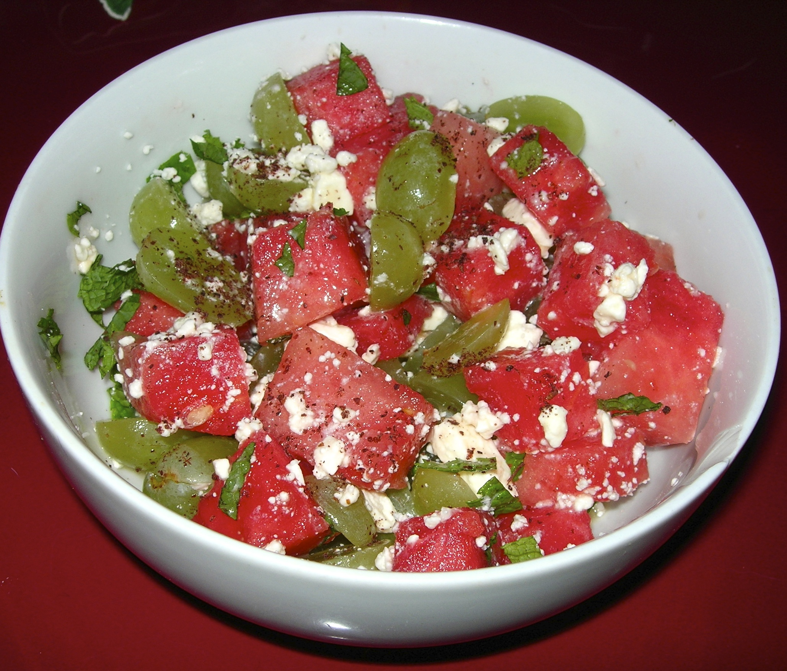

Watermelon salad
Homepage

Description:
Oh honey, this one's a summer showstopper: juicy watermelon tossed with feta, arugula, red onion, and tomatoes—fresh, vibrant, and totally irresistible. Even the little ones can't get enough. It's like sunshine in a bowl, love.
Ingredients:
- 3 tablespoons olive oil
- 2 teaspoons white balsamic vinegar
- 0.5 teaspoon kosher salt
- 8 ounces grape tomatoes, halved
- 3 cups arugula
- 1 cup sliced red onion
- 2 pounds watermelon, cubed
- 4 ounces feta cheese, cut into 0.25-inch cubes
Steps:
- Whisk olive oil, vinegar, and salt together in a large mixing bowl. Add tomatoes, arugula, and red onion; toss to coat. Gently stir in watermelon and feta cheese to serve.
Information adapted from Allrecipes.